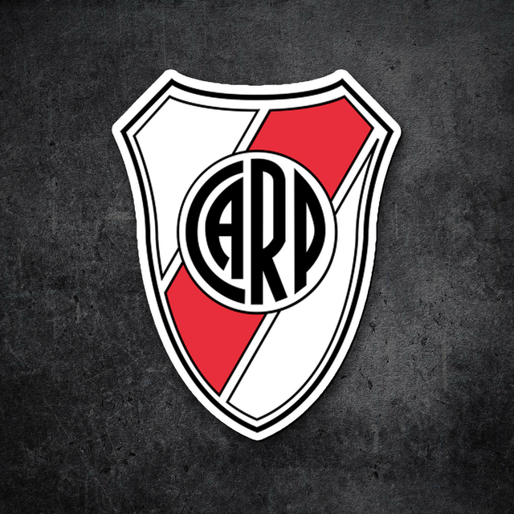
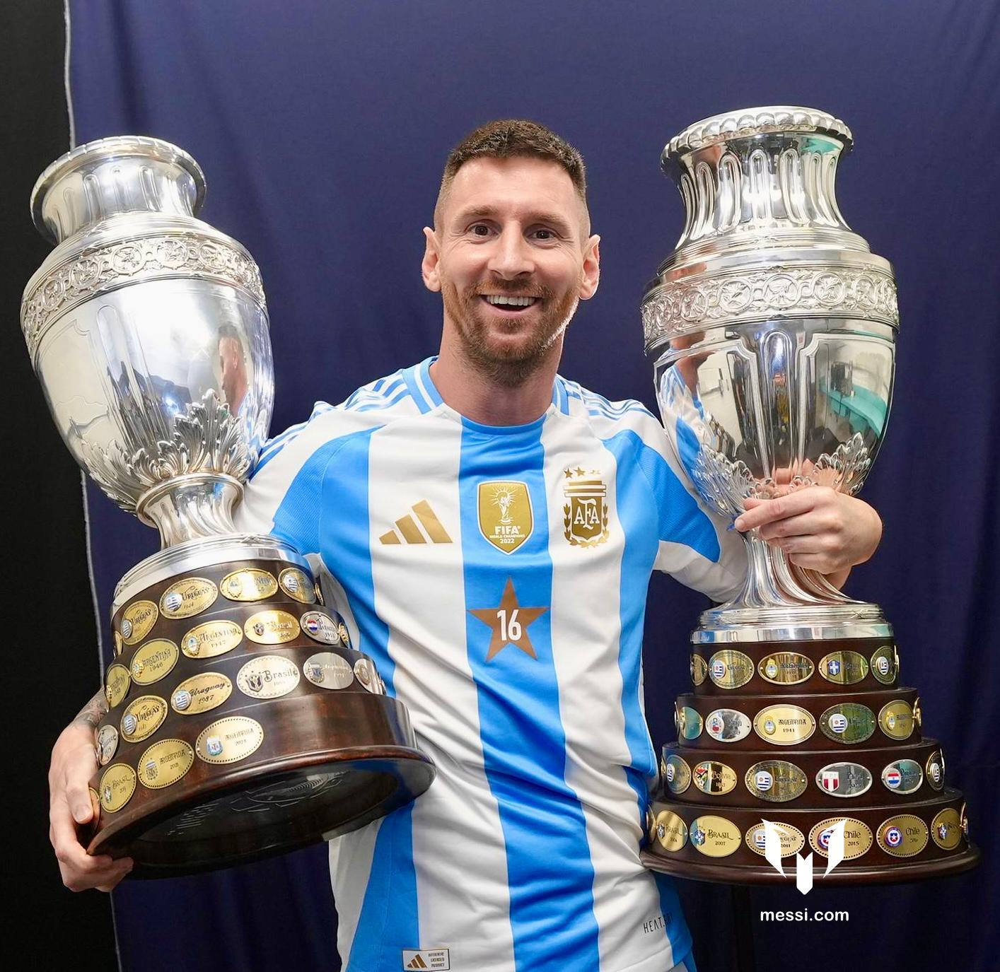
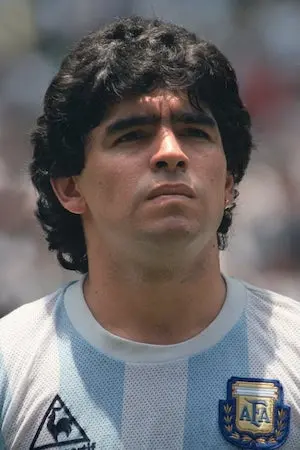

actividad
1.1- ¿Para qué sirve la etiqueta ul? Dar un ejemplo en donde lo utilizarías.
la etiqueta <Ul></Ul> sirve para generar listas.
lo utilizaria el una lista de compra.
1.2- ¿Para qué sirve la etiqueta ol? Dar un ejemplo en donde lo utilizarías.
la etiqueta <ol></ol> sirve para definir listas numericas.
lo utilizaria en una tabla de valoras
1.3- ¿Para qué sirve la etiqueta dl? Dar un ejemplo en donde lo utilizarías.
la etiqueta <dl></dl> sirve para representar una lista descriptiva.
lo utilizaria para reprecentar personajes de peliculas o series.
1.4- ¿Para qué sirve la etiqueta li? Dar un ejemplo en donde lo utilizarías.
la etiqueta <li></li> generar una lista declara cada uno de los elementos de una lista.
lo utilizaria para una lista que no la necesite en un oreden.
1.5- Crea una lista desordenada con tres elementos (li) que contengan
nombres de países de América del Sur.
- argentina
- brasil
- uruguay
1.6- Crea una lista ordenada con cinco elementos (li) que contengan
los días de la semana en orden alfabético.
- lunes
- martes
- miercoles
- jueves
- viernes
1.7- Anida una lista desordenada dentro de otro elemento li de otra lista desordenada
para crear una lista anidada de frutas y verduras.
1.8- Crea una lista ordenada, respetando las negritas y el subrayado, que contenga los siguientes pasos para
hacer una tarta de manzana: a) Pelar y cortar las manzanas en rodajas finas. b) Mezclar la canela, el azúcar y
la harina en un tazón. c) Colocar la masa de la tarta en un molde para horno. d) Colocar las manzanas sobre la
masa de la tarta. e) Hornear la tarta durante 45 minutos.
-
- a) Pelar y cortar las manzanas en rodajas finas.
- b) Mezclar la canela, el azúcar y la harina en un tazón.
- c) Colocar la masa de la tarta en un molde para horno.
- d) Colocar las manzanas sobre la masa de la tarta.
- e) Hornear la tarta durante 45 minutos.
1.9- Existe un atributo que se aplica a la etiqueta ol para ver la lista en orden descendente en vez de
ascendente, ¿cuál es ese atributo? Utilizar la referencia de atributos de HTML
https://developer.mozilla.org/es/docs/Web/HTML/Attributes
el atributo reversed para las listas ordenadas
1.10- Utilizando el atributo anterior, crear una lista con cuatro elementos que contengan nombres de películas
de terror de forma descendente.
- la monja
- el exorcista
- la matanza de texas
- la llorona
1.11 Elegir un gusto particular y realizar una lista descriptiva de por lo menos 5 elementos. El título debe
tener un enlace que lleve a un sitio de referencia. Utilizar en las descripciones etiquetas: strong, em, img.

- Manchester City
-
El Manchester City Football Club, conocido como Manchester City es un club de fútbol de la ciudad de Mánchester, Inglaterra, que juega en la Premier League.
Fue fundado el 23 de noviembre de 1880 bajo el nombre de St. Mark's (West Gorton),
luego pasó a llamarse Ardwick Association Football Club en 1887 y finalmente, el 16 de abril de 1894, adquirió su denominación actual.
El club disputa sus partidos en el Etihad Stadium desde 2003, habiendo jugado en el Maine Road desde 1923.
El club adoptó su camiseta de local celeste en 1894 en la primera temporada de la versión actual del club, y se han utilizado desde entonces.
En términos de trofeos ganados, es el cuarto club más exitoso en el fútbol inglés.

- river plate
-
El Club Atlético River Platees un entidad polideportiva de Argentina.
Fue fundado el 25 de mayo de 1901 en el barrio de La Boca, tras la fusión de los clubes Santa Rosa y La Rosales,
y su nombre proviene de la antigua denominación que se le daba en el inglés británico al Río de la Plata.

- lionel messi
-
Lionel Andrés Messi Cuccittini, conocido como Leo Messi, es un futbolista argentino que juega como delantero o centrocampista.
Desde 2023, integra el plantel del Inter Miami de la MLS canadoestadounidense.
Es también internacional con la selección de Argentina, de la que es capitán.

- maradona
-
Diego Armando Maradona Franco fue un futbolista profesional, entrenador y presentador argentino.
Como jugador se desempeñó como mediocampista ofensivo o delantero, y es reconocido por numerosos especialistas,
exfutbolistas y personalidades internacionales
como uno de los mejores futbolistas en la historia.